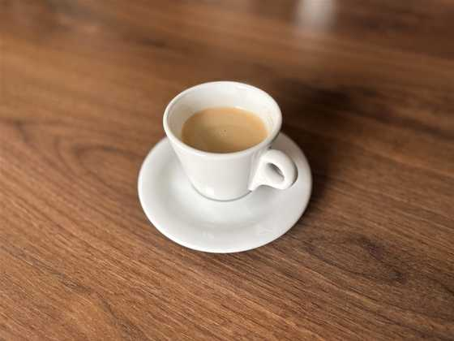
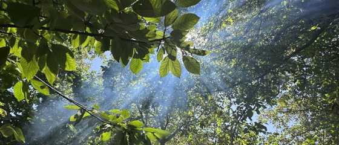
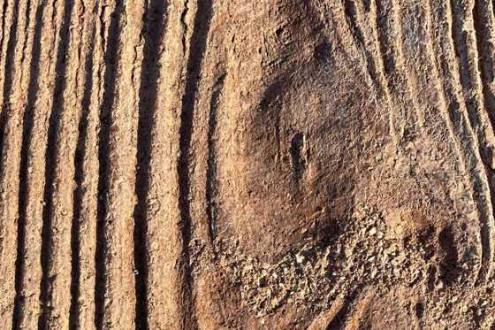

HACHINOHE ASAHIGAOKA
小鉢をひとつずつ、
小鉢をひとつずつ、
ゆっくり味わう時間を。
八戸・旭ケ丘のカフェ WaiWaicafe。たくさんの小鉢が並ぶお昼ごはんと、午後のひと息のためのページです。
お店の由来・想い
WaiWaicafeは、八戸市旭ケ丘の旭ヶ丘郵便局の向かいにあるカフェです。2023年1月3日に開店し、1月10日からランチの提供を始めたと、地域のグルメブログで紹介されています。
ランチの「こばちお膳」は、野菜を中心にした小鉢がいくつも並ぶ定食で、内容は日によって変わるそうです。このページでは「小鉢をひとつずつ味わう」ことをコンセプトにしました(制作側のイメージです)。
- 所在地 青森県八戸市旭ケ丘3丁目1-5
- 駐車場 店の前に3台分(ブログによる)
- 喫煙 店内・駐車場ともに禁煙(ブログによる)
- 席 カウンター席、テーブル席、個室があると紹介されています
- 店名の意味 確認できていません
情報は第三者のブログ記事に基づくもので、現在の内容と異なる場合があります。最新情報はInstagramでご確認ください。




口コミ(イメージ例)
イメージ例
小鉢がいくつも並んでいると、それだけで気持ちが上がりそうです。
イメージ例
お昼のあとに、甘いものとコーヒーでひと息つきたいときに行ってみたいです。
イメージ例
駐車場が店の前にあると聞いて、車で行きやすそうだと思いました。
上の3件は創作したイメージ例で、実在のお客様の声ではありません。
アクセス
青森県八戸市旭ケ丘3丁目1-5
電話:準備中 / 営業時間・定休日:準備中